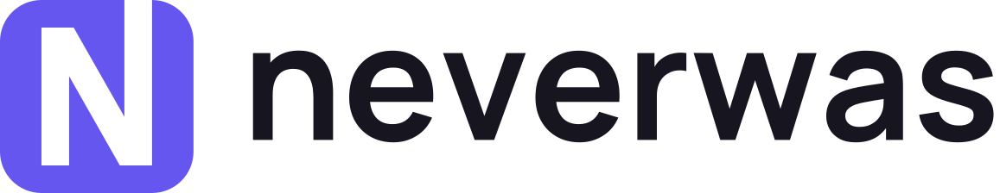
Manual de marca de Neverwas: qué es, para quién, cómo firma, con qué colores y letras, y cómo habla.
Neverwas es un desinstalador gratuito para Windows, derivado de Bulk Crap Uninstaller 6.3. Quita muchos programas de una vez y después busca lo que dejaron: carpetas, claves de registro, tareas y servicios. El nombre es la promesa: que el equipo quede como si el programa nunca hubiera estado.
Para quien mantiene su propia PC con Windows y quiere quitar varios programas sin que queden restos, Neverwas es el desinstalador gratuito y liviano que deja el equipo como si el programa nunca hubiera existido, porque después de desinstalar rastrea los restos y te los muestra antes de borrarlos, sin publicidad, sin cuenta y sin enviar datos a ningún servidor.
Los desinstaladores suelen hablar el idioma de la limpieza agresiva: papeleras, escobas, escudos, cifras alarmantes de "basura encontrada", verdes y azules saturados y rojos de alerta. Neverwas rompe ese patrón a propósito: su metáfora no es limpiar sino no dejar rastro. Por eso no usa papeleras ni escobas, usa un único color de acento que la categoría no ocupa, y habla en voz baja.
Panorama de la categoría: la lectura de arriba sale de los patrones conocidos del rubro, no de una lámina armada para este manual. Antes de una campaña o un sitio público conviene armar esa lámina con 8 a 10 competidores y confirmar que el índigo sigue libre.
Una palabra, inglés, se pronuncia /ˈnɛvərwɒz/. En texto se escribe Neverwas (mayúscula inicial); el logotipo usa minúsculas. Los binarios son Neverwas.exe y neverwas-cli.
La sesión de base del fork verificó que no choca con proyectos de GitHub ni paquetes de winget. No se hizo búsqueda de marca registrada (IMPI, USPTO, EUIPO). Esa búsqueda sirve para descartar conflictos, nunca para confirmar disponibilidad. Si el proyecto va a tener inversión o venta, la revisa un especialista en propiedad industrial. Como punto de partida a verificar: clase de Niza 9 (software descargable) y, si hubiera servicio en línea, la 42.
El símbolo es una placa, la forma de un ícono de programa, con una N calada: la letra está hecha de ausencia. El último trazo de la N atraviesa el borde superior y deja la placa abierta. El programa salió por ahí y no dejó nada atrás.
Tipo de logo: imagotipo. El símbolo y el logotipo funcionan juntos o separados; el símbolo solo es el ícono de la app.
| Camino | Idea | Resultado |
|---|---|---|
| A. La salida | N calada en una placa, con el trazo derecho abierto hacia afuera. | elegido Se lee como N a 16 px, funciona en un color y en negativo, y la abertura lo separa de otras marcas "N en un cuadrado". |
| B. Nulo | N con la diagonal prolongada hasta un círculo, como el signo de vacío. | Descartado: se lee como "prohibido", y a 16 px el círculo y la N se empastan. |
| C. Fantasma | N sólida con el último trazo en contorno: lo que estuvo y ya no. | Descartado: el contorno desaparece a 16 px y no sobrevive en un solo color. |
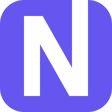
neverwas-isotipo-color.svg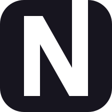
neverwas-isotipo-negro.svg
neverwas-isotipo-blanco.svgneverwas-horizontal-color.svgneverwas-horizontal-blanco.svg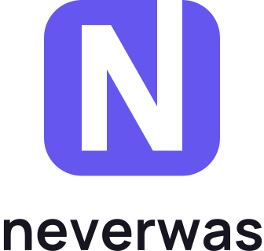
neverwas-vertical-color.svg
neverwas-vertical-blanco.svg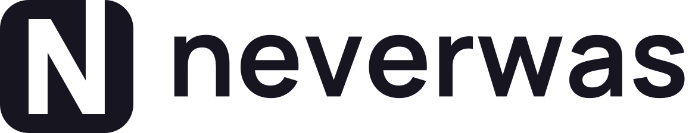
neverwas-horizontal-negro.svgEn las versiones negra y blanca la N es un hueco: deja ver el fondo. En la versión color la N es blanca para que el ícono se lea igual sobre la barra de tareas clara y la oscura.
Grilla de 16 unidades, la del ícono de 16 px. Placa de 14 × 14 con radio 3; trazos de la N de 2 unidades (la diagonal, 2.33, para que pese lo mismo que los verticales); N de 3 a 13 en altura.
Unidad x = el ancho de un trazo vertical de la N (1/7 del lado de la placa). Área de resguardo: 2x libres alrededor del símbolo y de cada versión del logo (línea roja punteada). Nada entra ahí: ni texto, ni bordes, ni otras marcas.
| Versión | Mínimo digital | Mínimo impreso |
|---|---|---|
| Isotipo | 16 px | 5 mm |
| Horizontal | 24 px de alto | 7 mm de alto |
| Vertical | 48 px de alto | 14 mm de alto |
Por debajo de 48 px el ícono se dibuja ajustado a píxeles enteros (lo hace tools/new-brand-assets.ps1); no escalar a mano el PNG de 256.
La categoría usa azules, verdes y rojos saturados. El índigo no lo ocupa nadie, y aguanta el registro de "precisa pero no fría". Los neutros llevan un sesgo leve hacia el índigo para que el gris no se vea por defecto. La paleta de marca es de un color; los semánticos van aparte.
El índigo es acento: el ícono, un botón principal, un enlace. Si una pieza se vuelve índigo de punta a punta (como la imagen de "Acerca de"), el resto de la pieza es blanco.
Calculados con la fórmula de luminancia relativa de WCAG. Texto normal exige 4.5:1; texto grande, íconos y bordes de controles, 3:1.
| Par | Contraste | Uso aprobado |
|---|---|---|
| Aa tinta sobre papel | 17.31:1 | Todo texto |
| Aa pizarra sobre papel | 6.22:1 | Texto secundario |
| Aa pizarra sobre bruma | 5.47:1 | Texto secundario en fondos sutiles |
| Aa índigo sobre blanco | 5.05:1 | Texto, enlaces, íconos |
| Aa índigo sobre papel | 4.85:1 | Texto, enlaces |
| Aa blanco sobre índigo | 5.05:1 | Texto en botones, la N del símbolo |
| Aa blanco sobre índigo fuerte | 7.36:1 | Texto en botones (AAA) |
| Aa índigo fuerte sobre suave | 6.33:1 | Filas seleccionadas |
| Aa bruma sobre tinta | 15.23:1 | Texto en tema oscuro |
| Aa índigo claro sobre tinta | 7.28:1 | Enlaces en tema oscuro |
| Aa índigo sobre tinta | 3.57:1 | Solo íconos y texto grande; para texto usar índigo claro |
| ■ índigo sobre barra oscura de Windows | 3.22:1 | La placa del ícono (objeto gráfico) |
| ■ índigo sobre barra clara de Windows | 4.56:1 | La placa del ícono |
| Aa niebla sobre papel | 1.60:1 | Nunca texto ni bordes de controles: solo divisores decorativos |
Separados de la marca: el rojo de error no es un color de Neverwas, y el índigo nunca indica un estado. Todo estado se comunica también con texto o ícono, nunca solo con color.
Los valores CMYK y Pantone son referencias de partida, no conversiones aprobadas: hoy Neverwas no tiene piezas impresas. Si alguna vez las tiene, se ajustan viendo una prueba de impresión.
Sans geométrica con aperturas amplias: precisa sin ponerse fría. Logotipo (en Bold, convertido a curvas), títulos, documentación y web.
licencia verificada SIL Open Font License 1.1, sin nombre reservado: cubre uso comercial, web, embebido en apps y logotipo, y permite derivar pesos estáticos. Fuente: github.com/google/fonts/ofl/manrope. Copia y licencia en docs/brand/fonts/.
Para neverwas-cli, rutas, comandos y código. Es la monoespaciada de la Terminal de Windows: el mismo mundo en el que vive el producto.
licencia verificada SIL OFL 1.1 con nombre reservado "Cascadia Code", en el release de github.com/microsoft/cascadia-code. Ojo: la copia que trae Windows en C:\Windows\Fonts viene con licencia de Microsoft, no OFL. Para redistribuir, usar la del release.
Dentro de la app la interfaz sigue en Segoe UI, la fuente del sistema; Neverwas no la distribuye. Las dos familias verificaron los caracteres del español: á é í ó ú ü ñ Ñ ¿ ¡ « » “ ” ‘ ’.
Jerarquía con más de una variable: peso (800 títulos, 700 subtítulos, 400 texto), color (tinta y pizarra) y tamaño. Interlineado 1.5 en texto corrido, 1.15 en títulos. Texto corrido nunca por debajo de 16 px en web; nada de pesos ligeros (200-300) por debajo de 20 px.
La interfaz está en inglés (con las traducciones heredadas de BCU). En inglés, segunda persona y frases cortas. En español, tú: cercano sin ser informal. Las traducciones heredadas que usan "usted" se alinean cuando se rehaga la interfaz.
Explica los términos técnicos la primera vez ("claves de registro: la configuración que Windows guarda para cada programa"). Da números exactos. Nunca asusta para vender una acción.
Qué pasó, por qué, y qué sigue. Sin códigos sueltos y sin disculpas de relleno.
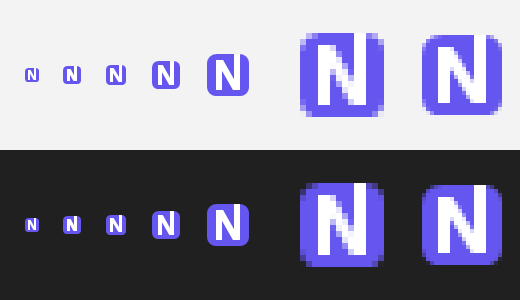
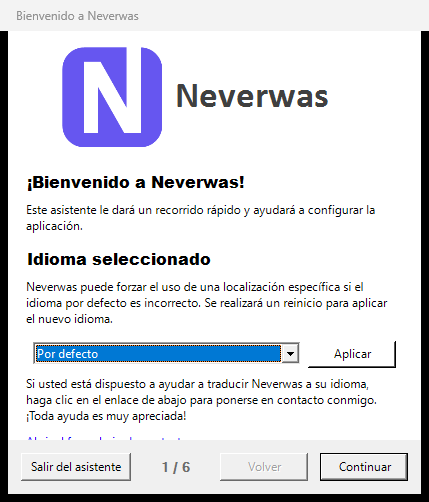
3.png): el símbolo, seguido de la palabra completa. El símbolo no hace de letra.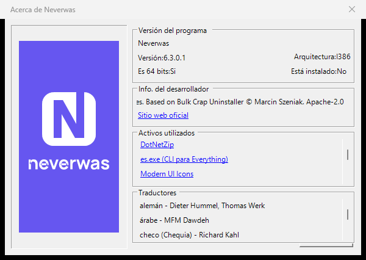
bigImage.bmp, 164 × 314): versión vertical en negativo sobre índigo.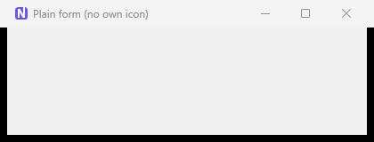
Capturas tomadas del build de Release sobre Windows 11 en español.
docs/brand/
├── manual.html este manual
├── tokens.json colores, tipografía, espaciado y radios (fuente de verdad)
├── build-masters.py genera los SVG maestros (requiere fontTools)
├── logo/ maestros vectoriales, tipografía en curvas
│ ├── neverwas-isotipo-{color,negro,blanco}.svg
│ ├── neverwas-horizontal-{color,negro,blanco}.svg
│ └── neverwas-vertical-{color,negro,blanco}.svg
├── fonts/
│ ├── Manrope-Bold.ttf instancia estática del variable de Google Fonts
│ └── OFL-Manrope.txt la licencia
└── aplicaciones/ capturas de la app
tools/new-brand-assets.ps1 dibuja los recursos de la app desde la misma geometría
source/BulkCrapUninstaller/Resources/
├── logo.ico 16-256 px: exe, launcher, consola, ventanas
├── 3.png 256 × 256: bienvenida y splash
└── bigImage.bmp 164 × 314: "Acerca de"
Los SVG: python docs/brand/build-masters.py. Los recursos de la app: powershell -NoProfile -ExecutionPolicy Bypass -File tools/new-brand-assets.ps1. Si cambia la geometría, se cambia en los dos scripts.
Las ventanas que asignan Resources.Icon_Logo ya muestran el símbolo porque ese recurso es logo.ico. Las que no asignan ícono reciben el mismo por DefaultWindowIcon, que al arrancar reemplaza el ícono por defecto de WinForms. Así una ventana nueva de upstream sale con la marca sin tocar su .resx. Un test (DefaultWindowIconTests) falla si una actualización de .NET mueve ese ícono.
Espaciado en múltiplos de 4 y 8 px: 4, 8, 16, 24, 32, 48, 64, 96. Radios: 4 y 8 px en interfaz; la placa del símbolo usa 3/14 de su lado.
| ID | Checkpoint | Estado |
|---|---|---|
| BRAND-001 | Estrategia documentada y aprobada por escrito | falta aprobación |
| BRAND-002/003/004/005 | Posicionamiento, público por comportamiento, personalidad con opuestos, tono de voz | hecho |
| BRAND-008 | Panorama visual de la categoría | sin lámina |
| NAME-002 | Búsqueda de marca registrada | no hecha |
| LOGO-001 a 008 | 16 px, un color, negativo, versiones, resguardo, vectorial en curvas, usos incorrectos, sin efectos | hecho |
| LOGO-003 | Prueba de memoria con personas | pendiente |
| COLOR-001/002/003/005 | Roles y proporción, pares WCAG, nada solo por color, semánticos aparte | hecho |
| COLOR-004/006 | CMYK y Pantone aprobados en prueba impresa | no aplica hoy |
| TYPE-001/002/003/005/006 | Familias, licencias, escala, jerarquía, caracteres del español | hecho |
| SYS-001/002/003/004/006/007 | Manual, tokens, assets, espaciado, accesibilidad, aplicaciones | hecho |
| SYS-005 | Dirección de imagen | no aplica hoy |